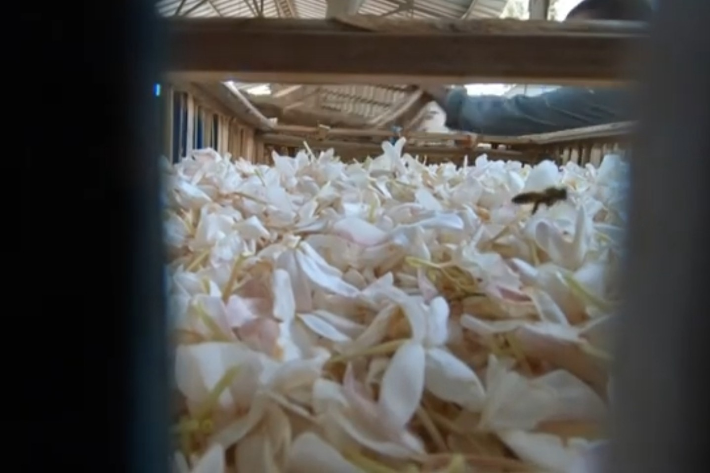

وسط حقول الياسمين التي تفوح رائحتها في ساعات الفجر الأولى
داخل إحدى ورش الفخار بقرية الفرستق، حيث تتحول البودرة إلى قطع فنية
تمثل الصناعات الكبرى أحد العناصر المؤثرة في النشاط الاقتصادي المحلي، خاصة الصناعات المرتبطة بالإنتاج الزراعي
حركة سوق الجملة في المحلة الكبرى تتغير ملامح تجارة الخضروات تدريجياً،